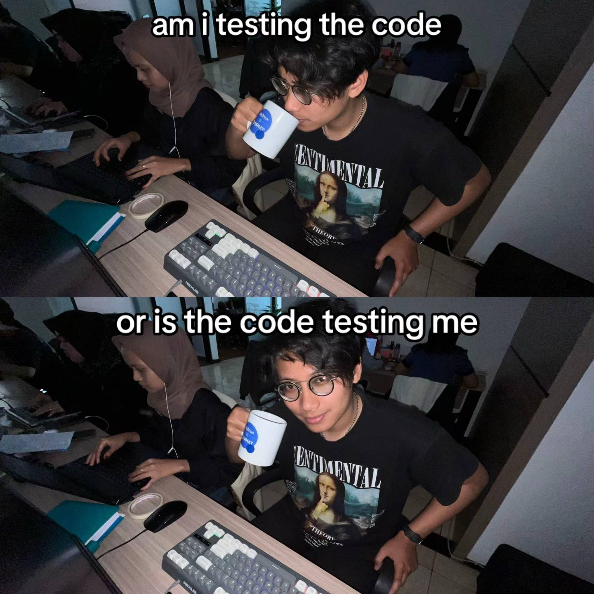

Tugas Saya
Makalah UTS
10 Font Populer :
1. Arial :
Yosia Sitompul
2. Times New Roman :
Yosia Sitompul
3. Calibri :
Yosia Sitompul
4. verdana :
Yosia Sitompul
5. Georgia :
Yosia Sitompul
6. Comic Sans :
Yosia Sitompul
7. Tahoma :
Yosia Sitompul
8. Courier New :
Yosia Sitompul
9. Garamond :
Yosia Sitompul
10. Cambria :
Yosia Sitompul
10 Format Gambar Populer :
1. JPEG

2. PNG

3. GIF

4. BMP

5. TIFF
6. SVG
7. WEBP

8. HEIF

9. PSD

10. RAW

10 Format Audio Populer :
1. MP3
2. WAV
3. AAC
4. FLAC
5. OGG
6. AIFF
7. ALAC
8. WMA
9. DSD
10. Opus
10 Format Video Populer :
1. MP4
2. AVI
3. MKV
4. MOV
5. WMV
6. FLV
7. WebM
8. 3GP
9. MPEG
10. AV1
Animasi :